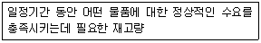
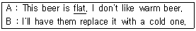
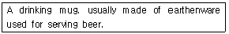
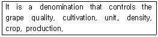
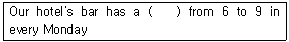
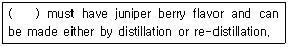
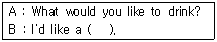

조주기능사 (2012-07-22 기출문제)
1과목: 주류학개론
1. 곡류를 원료로 만드는 술의 제조시 당화과정에 필요한 것은?
- Ethyl Alcohol
- CO2
- Yeast
- Diastase
(정답률: 57%)

2. 데킬라에 오렌지 주스를 배합한 후 붉은색 시럽을 뿌려서 모양이 마치 일출의 장관을 연출케 하는 환희의 칵테일은?
- Stinger
- Tequila Sunrise
- Screw Driver
- Pink Lady
(정답률: 94%)
3. 과일이나 곡류를 발효시킨 주정을 기초로 증류한 스피릿(Spirits)에 감미를 더하고 천연향미를 첨가한 것은?
- 양조주(Fermented Liquor)
- 증류주(Distilled Liquor)
- 혼성주(Liqueur)
- 아쿠아비트(Akvavit)
(정답률: 88%)
4. 커피의 맛과 향을 결정하는 중요한 가공요소가 아닌 것은?
- Roasting
- Blending
- Grinding
- Weathering
(정답률: 90%)
5. 보드카(Vodka)에 대한 설명 중 틀린 것은?
- 슬라브 민족의 국민주라고 할 수 있을 정도로 애음되는 술이다.
- 사탕수수를 주원료로 사용한다.
- 무색(Colorless), 무미(Tasteless), 무취(Odorless)이다.
- 자작나무 활성탄과 모래를 통과시켜 여과한 술이다.
(정답률: 90%)
6. 다음 중 용량이 가장 큰 계량 단위는?
- 1 Teaspoon
- 1 Pint
- 1 Split
- 1 Dash
(정답률: 69%)
7. 칵테일 장식에 사용되는 올리브(Olive)에 대한 설명으로 틀린 것은?
- 칵테일용과 식용이 있다.
- 마티니의 맛을 한껏 더해 준다.
- 스터프트 올리브(Stuffed Olive)는 칵테일용이다.
- 롭 로이 칵테일에 장식되며 절여서 사용한다.
(정답률: 66%)
8. 다음 중 혼성주의 제조방법이 아닌 것은?
- 샤마르법(Charmat Process)
- 증류법(Distilled Process)
- 침출법(Infusion Process)
- 배합법(Essence Process)
(정답률: 77%)
9. 프랑스에서 가장 오래된 혼성주 중의 하나로 호박색을 띠고 ‘최대 최선의 신에게’라는 뜻을 가지고 있는 것은?
- 압생트(Absente)
- 아쿠아비트(Akvavit)
- 캄파리(Campari)
- 베네딕틴 디오엠(Benedictine D.O.M)
(정답률: 87%)
10. 흑맥주가 아닌 것은?
- Stout Beer
- Munchener Beer
- Kolsch Beer
- Porter Beer
(정답률: 32%)
11. 다음 중 그레나딘(Grenadine)이 필요한 칵테일은?
- 위스키 사워(Sour)
- 바카디(Bacardi)
- 카루소(Caruso)
- 마가리타(Margarta)
(정답률: 61%)
12. 스파클링 와인에 해당되지 않는 것은?
- Champagne
- Cremant
- Vin doux naturel
- Spumante
(정답률: 74%)
13. 수분과 이산화탄소로만 구성되어 식욕을 돋우는 효과가 있는 음료는?
- Mineral Water
- Soda Water
- Plain Water
- Cider
(정답률: 88%)
14. 정찬코스에서 hors-d'oeuvre 또는 Soup 대신에 마시는 우아하고 자양분이 많은 칵테일은?
- after dinner Cocktail
- Before dinner Cocktail
- Club Cocktail
- Night cap Cocktail
(정답률: 64%)
15. 다음 중 뜨거운 칵테일은?
- 아이리쉬 커피
- 싱가폴 슬링
- 핑크레이디
- 피나 콜라다
(정답률: 92%)
16. 알코올성 음료 중 성질이 다른 하나는?
- Kahlua
- Tia Maria
- Vodka
- Anisette
(정답률: 81%)
17. 에일(Ale)이란 음료는?
- 와인의 일종이다
- 증류주의 일종이다
- 맥주의 일종이다
- 혼성주의 일종이다
(정답률: 79%)
18. 다음 중 오드비(Eau de vie)가 아닌 것은?
- Kirsch
- Apricots
- Framboise
- Amaretto
(정답률: 57%)
19. 보르도(Bordeaux)지역에서 재배되는 레드와인용 품종이 아닌 것은?
- 메를로(Merlot)
- 뮈스까델(Muscadelle)
- 까베르네 쇼비뇽(Cabernet Sauvignon)
- 까베르네 프랑(Cabernet Franc)
(정답률: 67%)
20. 맨하탄(Manhattan) 칵테일을 담아 제공하는 글라스로 가장 적합한 것은?
- 샴페인 글라스(Champagne glass)
- 칵테일 글라스(Cocktail glass)
- 하이볼 글라스(Highball glass)
- 온더락 글라스(On the rock glass)
(정답률: 67%)
21. 포트와인(Port Wine)이란?
- 포르투갈산 강화주
- 포도주의 총칭
- 캘리포니아산 적포도주
- 호주산 적포도주
(정답률: 87%)
22. 세계 4대 위스키에 속하지 않는 것은?
- Scotch Whisky
- American Whiskey
- Canadian Whisky
- Japanese Whisky
(정답률: 96%)
23. 칵테일 도량용어로 1 Finger에 가장 가까운 양은?
- 30㎖ 정도의 양
- 1병(Bottle)만큼의 양
- 1 대시(Dash)의 양
- 1컵(Cup)의 양
(정답률: 62%)
24. 진(Gin)에 다음 어느 것을 혼합해야 Gin Rickey가 되는가?
- 소다수(Soda Water)
- 진저엘(Ginger Ale)
- 콜라(Cola)
- 사이다(Cider)
(정답률: 70%)
25. Gibson에 대한 설명으로 틀린 것은?
- 알코올 도수는 약 36도에 해당한다.
- 베이스는 Gin이다.
- 칵테일 어니언(Onion)으로 장식한다.
- 기법은 Shaking이다.
(정답률: 69%)
26. 우리나라 민속주에 대한 설명으로 틀린 것은?
- 탁주류, 약주류, 소주류 등 다양한 민속주가 생산된다.
- 쌀 등 곡물을 주원료로 사용하는 민속주가 많다.
- 삼국시대부터 증류주가 제조되었다.
- 발효제로는 누룩만을 사용하여 제조하고 있다.
(정답률: 62%)
27. 와인의 용량 중 1.5L 사이즈는?
- 발따자르(Balthazer)
- 드미(Demi)
- 매그넘(Magnum)
- 제로보암(Jeroboam)
(정답률: 78%)
28. 커피의 3대 원종이 아닌 것은?
- 로부스타종
- 아라비카종
- 인디카종
- 리베리카종
(정답률: 90%)
29. 다음 중 Bourbon Whiskey는?
- Jim Beam
- Ballantine's
- Old Bushmills
- Cutty Sark
(정답률: 79%)
30. 잔 주위에 설탕이나 소금 등을 묻혀서 만드는 방법은?
- Shakinf
- Building
- Floating
- Frosting
(정답률: 87%)
2과목: 주장관리개론
31. 원가를 변동비와 고정비로 구분할 때 변동비에 해당하는 것은?
- 임차료
- 직접재료비
- 재산세
- 보험료
(정답률: 85%)
32. 발포성 와인의 서비스 방법으로 틀린 것은?
- 병을 45°로 기울인 후 세게 흔들어 거품이 충분히 나도록 한 후 철사 열 개를 푼다.
- 와인쿨러에 물과 얼음을 넣고 발포성 와인병을 넣어 차갑게 한 다음 서브한다.
- 서브 후 서비스 넵킨으로 병목을 닦아 술이 테이블 위로 떨어지는 것을 방지한다.
- 거품이 너무 나오지 않게 잔의 내측 벽으로 흘리면서 잔을 채운다.
(정답률: 88%)
33. 믹싱글라스(Mixing Glass)에서 만든 칵테일을 글라스에 따를 때 얼음을 걸러주는 역할을 하는 기구는?
- Ice Pick
- Ice Tong
- Strainer
- Squeezer
(정답률: 90%)
34. 테이블의 분위기를 돋보이게 하거나 고객의 편의를 위해 중앙에 놓는 집기들의 배열을 무엇이라 하는가?
- Service Wagon
- Show Plate
- B & B Plate
- Center Piece
(정답률: 80%)
35. 바텐더(Bartender)의 수칙이 아닌 것은?
- Recipe에 의한 재료와 양을 사용한다.
- 영업 중 Bar에서 재고조사를 한다.
- 고객과의 대화에 지장이 없도록 교양을 넓힌다.
- 고객 한 사람마다 신경을 써서 주문에 응한다.
(정답률: 91%)
36. Standard Recipe를 지켜야 하는 이유로 틀린 것은?
- 동일한 맛을 낼 수 있다.
- 객관성을 유지 할 수 있다.
- 원가정책의 기초로 삼을 수 있다.
- 다양한 맛을 낼 수 있다.
(정답률: 86%)
37. 레몬이나 과일 등의 가니쉬를 으깰 때 쓰는 목재로 된 기구는?
- 칵테일 픽(Cocktail Pick)
- 푸어러(Pourer)
- 아이스 페일(Ice Pail)
- 우드 머들러(Wood Muddler)
(정답률: 98%)
38. 음료가 든 잔을 서비스 할 때 틀린 사항은?
- Tray를 사용한다.
- Stem을 잡는다.
- Rim을 잡는다.
- Coaster를 잡는다.
(정답률: 77%)
39. 바에서 사용하는 House Brand의 의미는?
- 널리 알려진 술의 종류
- 지정 주문이 아닐 때 쓰는 술의 종류
- 상품(上品)에 해당하는 술의 종류
- 조리용으로 사용하는 술의 종류
(정답률: 76%)
40. 바텐더가 지켜야 할 바(Bar)에서의 예의로 가장 올바른 것은?
- 정중하게 손님을 환대하며 고객이 기분이 좋도록 Lip Service를 한다.
- 자주 오시는 손님에게는 오랜 시간 이야기 한다.
- Second Order를 하도록 적극적으로 강요한다.
- 고가의 품목을 적극 추천하여 손님의 입장보다 매출에 많은 신경을 쓴다.
(정답률: 89%)
41. 와인 서빙에 필요치 않은 것은?
- Decanter
- Cock Screw
- Stir rod
- Pincers
(정답률: 63%)
42. 다음은 무엇에 대한 설명인가?

- 기준재고량(Par Stock)
- 일일재고량
- 월말재고량
- 주단위 재고량
(정답률: 88%)
43. 바(Bar) 집기 비품에 속하지 않는 것은?
- Nut Meg
- Spindle Mixer
- Paring Knife
- Ice Pail
(정답률: 79%)
44. 다음 중 Decanter와 가장 관계있는 것은?
- Red Wine
- White Wine
- Champagne
- Sherry Wine
(정답률: 76%)
45. 맥주의 관리방법으로 옳은 것은?
- 습도가 높은 곳에 보관한다.
- 장시간 보관ㆍ숙성시켜서 먹는 것이 좋다.
- 냉장보관 할 필요는 없다.
- 직사광선을 피해 그늘지고 어두운 곳에 보관하여야 한다.
(정답률: 87%)
46. 와인의 이상적인 저장고가 갖추어야 할 조건이 아닌 것은?
- 8℃에서 14℃ 정도의 온도를 항상 유지해야 한다.
- 습도는 70~75% 정도를 항상 유지해야 한다.
- 흔들림이 없어야 한다.
- 통풍이 좋고 빛이 들어와야 한다.
(정답률: 92%)
47. 프론트 바(Front Bar)에 대한 설명으로 옳은 것은?
- 주문과 서브가 이루어지는 고객들의 이용 장소로서 일반적으로 폭 40cm, 높이 120cm가 표준이다.
- 술과 잔을 전시하는 기능을 갖고 있다.
- 술을 저장하는 창고이다.
- 주문과 서브가 이루어지는 고객들의 이용 장소로서 일반적으로 폭 80cm, 높이 150cm가 표준이다.
(정답률: 80%)
48. 프라페(Frappe)를 만들기 위해 준비하는 얼음은?
- Cube Ice
- Big Ice
- Cracked Ice
- Crushed Ice
(정답률: 90%)
49. Rob Roy 조주시 사용하는 기물은?
- 셰이커(Shaker)
- 믹싱글라스(Mixing Glass)
- 전기 블렌더(Blender)
- 주스믹서(Juice Mixer)
(정답률: 60%)
50. 선입선출의 의미로 맞는 것은?
- First in, First On
- First in, First Off
- First in, First Out
- First inside, First on
(정답률: 87%)
3과목: 고객서비스영어
51. What is the meaning of a walk-in guest?
- A guest with no reservation.
- Guest on charged instead of reservation guest.
- By walk-in guest.
- Guest that checks in through the front desk.
(정답률: 69%)
52. 다음 밑줄 친 단어의 의미는?

- 시원함
- 맛이 좋은
- 김이 빠진
- 너무 독한
(정답률: 87%)
53. 다음에서 설명하는 것은?

- Stein
- Coaster
- Decanter
- Muddler
(정답률: 37%)
54. 다음에서 설명하는 것은?

- V.D.Q.S
- Vin de Pays
- Vin de Table
- A.O.C
(정답률: 59%)
55. 다음 ( )안에 가장 알맞은 것은?

- Bargain sales
- Expensive price
- Happy hour
- Business time
(정답률: 79%)
56. Which is not Scotch Whisky?
- Bourbon
- Ballantine
- Cutty Sark
- V.A.T 69
(정답률: 66%)
57. “우리는 새 블랜더를 가지고 있다.”를 가장 잘 표현한 것은?
- We has been a new blender.
- We has a new blender.
- We had a new blender.
- We have a new blender.
(정답률: 87%)
58. 다음 ( ) 안에 알맞은 것은?

- Whisky
- Rum
- Tequila
- Gin
(정답률: 72%)
59. 다음 ( ) 안에 적합한 단어는?

- Bread
- Sauce
- Pizza
- Beer
(정답률: 97%)
60. What is the difference between Cognac and Brandy?
- material
- region
- manufacturing company
- nation
(정답률: 59%)